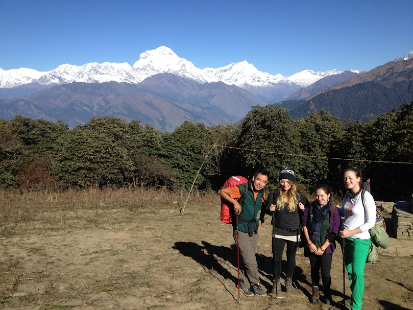
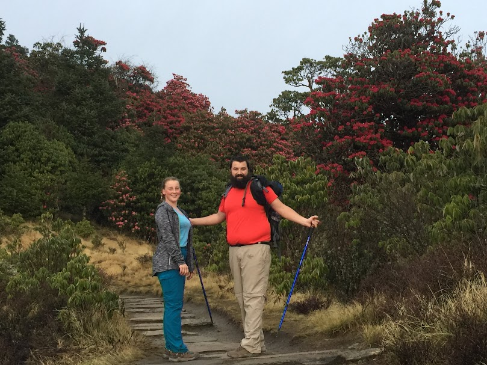
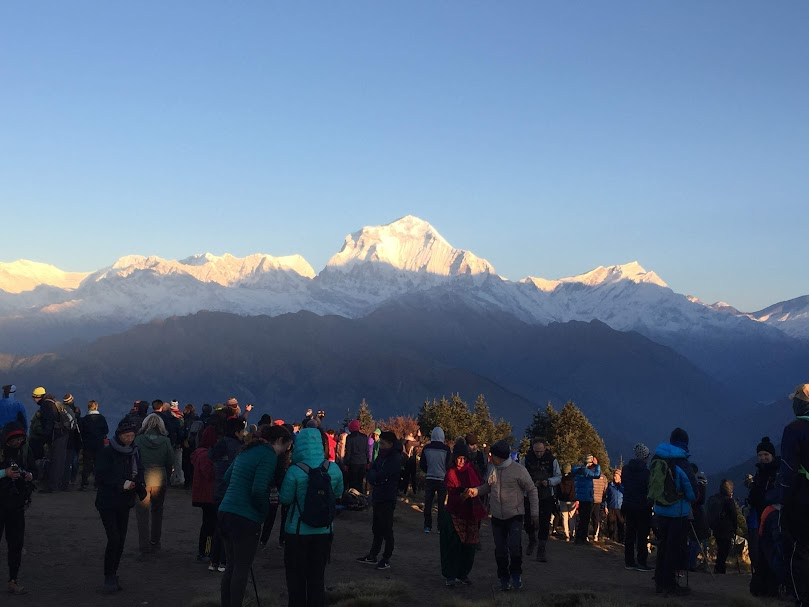

Ghorepani Ghandruk Trek
for the Ghorepani Ghandruk Trekking A quick and easy getaway trek to Ghorepani and Ghandruk villages. Chances to roam in the rural areas of Nepal.





Key Trip Facts
Trek Overview
Trip Highlights
Overview of Ghorepani Ghandruk Trekking
Let's Explore The Ghorepani Ghandruk Trekking in 2025/26. Providing detailed itineraries, cost breakdowns, and essential travel information for an unforgettable Trekking Experience in the Annapurna region of Nepal. Are you planning to go for a family outing to a beautiful hillside village? A little trek, a little cultural immersion, and some adventures of life is what you seek? In such a case, we just have to perfect the Annapurna trekking package for you, the Ghorepani Ghandruk Trek. Located in the heart of the Annapurna region and starting at around 48 kilometers from Pokhara, this trekking journey stands as a favorite trekking route for many.
The Ghorepani Ghandruk Trekking package with Nepal Unique Treks starts with a scenic drive from Pokhara to Ulleri. An early morning 2.5 to 3-hour drive beside the lakeside offers just the perfect sparkle to start this quick trek in Nepal. We begin our walking adventures from Ulleri, and the entire trek covers a total walking distance of 40 to 5 kilometers. Perfect for experienced, newbie trekkers, and even for families thinking of some adventure, the 5-Day Ghorepani Poonhill Trek stands as a perfect way to get away from the regular chaos and spend some days in the peace and serenity of the traditional settlements.
As you keep ascending the trail, you will pass through different traditional villages where houses are made of stone and mud with sloped roofs. In some villages, you can even see people wearing the traditional Gurung or Magar dresses in their everyday life. Moreover, their hospitality, cheerful smile, and delicacies offer you the perfect blend of nature and tradition at once. If you think that's all, wait till we take you through the natural aspect of the Ghorepani Ghandruk Trek.
During the 5-day Ghorepani Ghandruk Trek, the trekkers walk through the lush rhododendron forests, pine trees, scenic terraced landscapes, and, not to mention, the jaw-dropping views of the Annapurna and Dhaulagiri mountain ranges. Believe us, for these 5 days, you will feel like you are walking in a magical world of dreams. So, why wait? Book your Ghorepani Ghandruk Trek with us right away!
Ghorepani Ghandruk Trek with Nepal Unique Treks: For the Best Experience!
The Nepal Unique Treks stands as one of the favorite trekking and travel agencies in Nepal for many national and international travelers. With over 20 years of experience in providing travel, tour, and trekking services, we have strong hands-on experience in curating the best package for everyone. Whether you are a professional trekker or just a new enthusiast, choosing us can enhance your Ghorepani Ghandruk Trekking experience to the fullest. Check these out:
Nepal Unique Treks has over 20 years of experience, making it trustworthy for travelers.
We also have a team of responsible, friendly, young, energetic, and experienced trekking guides. These guides can enhance your journey and make it less complicated, well-managed, and insightful.
Since Nepal Unique Treks is a locally established trekking and travel agency, we have proper knowledge about the destination and trekking routes.
Our team of guides also speaks fluent English. Therefore, they will also help you communicate with the locals.
Nepal Unique Treks puts trekkers' safety at the top of the hierarchy. Therefore, we make sure to arrange the best food, accommodation, and transportation during the journey.
As you book the package, our team will also obtain the permits and other required documents for you.
Before starting the journey, Nepal Unique Treks and Expedition makes sure to give you a thorough briefing and also check whether you have all the necessary items or not.
We promote sustainable and environmentally friendly tours and treks. Due to that, we also look forward to the development, cleanliness, and safety of the trekking destinations and routes.
What Permits Are Needed for the Ghorepani Ghandruk Trek?
If you make up your mind to go for the 5-day Ghorepani Ghandruk Trek, you must also obtain a couple of permits. The local and major authorities of Nepal have made these permits to keep a proper track of people entering certain restricted and conservation areas. Here are the permits that you need for the Ghorepani Ghandruk Trekking journey:
Annapurna Conservation Area Permit (ACAP)
Trekkers' Information Management System (TIMS)
You can obtain these permits from both Kathmandu and Pokhara. In both of these places, the Nepal Unique Treks staff help you with the processes. However, we highly recommend that trekkers obtain these permits from the Trekking Agencies Association of Nepal (TAAN). One thing that the trekkers must remember is that if they plan to obtain the permits on the way to the checkpoint, they will have to pay double the amount of the regular fee. Therefore, we recommend that trekkers obtain the permits beforehand.
Ghorepani Ghandruk Trek Itinerary: Day by Day
5 Days program for Ghorepani Ghandruk Trek. Daily timings and sequences remain flexible according to weather, flight operations, and group pace.
Day 1: Drive from Pokhara to Ulleri (2.5 to 3 hours) - 2,050 meters
Approx. 2,050 m / 6,726 ft
Well, this is the first day of the Ghorepani Ghandruk Trekking journey and it starts with a scenic drive from Pokhara to Ulleri. This early morning drive by the hillsides and Phewa Lake offers you some majestic views to witness. Experiencing the cool breeze coming from the Annapurna and Dhaulagiri Himalayan ranges, we reach Ulleri within 2.5 to 3 hours. Well, that's where you get off the jeep and get yourself ready for some days of walking. However, we will not start the walk on the first day. Why so? Well, because we want you to stroll around Ulleri, interact with the locals, and experience a day in the peacefulness and serenity of this settlement. Take your time to experience the authentic local cuisines, interact with the locals, and enjoy the fullest of your day. In the evening, please return to the hotel for a delicious and fulfilling dinner before heading for a cozy sleep in the Annapurna region.
Day 2: Trek from Ulleri to Ghorepani (5 - 6 hours) - 2,855 meters
Approx. 2,855 m / 9,367 ft
Good first morning on the Ghorepani Ghandruk Trekking route. Wake up, freshen up, and have your breakfast because, after that, we need to walk. Today, we will cover an approximate distance of 9 to 10 kilometers, which might take around 5 to 6 hours. However, the time taken also depends upon the fitness level and walking speed of the trekkers. In between, we will also stop by different tea shops for lunch and snacks. So what are we walking past today? Well, this section of the Ghorepani Ghandruk Trekking trail takes us past some beautiful rhododendron blossoms, oak forests, and some traditionally settled villages. Just wait until you reach this section during the spring season. Yes, in the spring season, the whole rhododendron forests bursts with colors! On your way to Ghorepani from Ulleri, you can also visit some significant villages, including Banthanti and Nangethanti. As you reach Ghorepani, you will be welcomed by the cheerful smiles of the locals accompanied by outstanding views of snow-capped peaks like Annapurna South, Hiunchuli, and Machhapuchhre (Fishtail Mountain). Check in at the hotel, and store your belongings before exploring the village. Take your time to interact with the locals and get some insights about the area before returning to the hotel for dinner and an overnight stay.
Day 3: Early Morning Hike to PoonHill - 3210 meters, back to Ghorepani and trek to Tadapani (6 -7 hours) - 2,595 meters
Approx. 2,595 m / 8,514 ft
On the third day, we go for an early morning hike to PoonHill, a viewpoint located at an altitude of 3,210 meters. It takes about 1 hour for us to ascend to Poonhill viewpoint and the journey itself stands as one of the most adventurous. If you visit this viewpoint in the winter season, you can even experience snowfall. Remember that we will go for this hike before sunrise because this viewpoint stands as the best place to see the sunrise. Besides the sunrise view, the Poonhill viewpoint also offers exquisite views of some slow-covered mountains like Dhaulagiri, Annapurna I, Annapurna South, Machhapuchhre (Fishtail), and Nilgiri. Just imagine walking past an adventurous terrain while these Himalayas keep encouraging you. Take your time to capture as many photos, and videos, and make memories before we trace our way back towards Ghorepani. Moreover, the trekkers can also delve deep into the peaceful environment accompanied by the meditative and calm environment of PoonHill. Descending to Tadapani After spending some quality time in the Poonhill viewpoint, we return to Ghorepani. The rest of the time can be utilized by exploring Ghorepani, a charming Gurung and Magar village. Besides, many trekkers and travelers also claim this village as the best place to get some picturesque sightings of stunning mountain views, vibrant rhododendron forests, and rich cultural heritage. We will have lunch in Ghorepani and go for a quick break before setting on a descending journey towards Tadapani. Even though this is a descending trail, it starts with a gentle ascend through dense rhododendron and oak forests. What more? Well, this section of the Ghorepani Ghandruk trekking map also takes you past some hamlets, cascading waterfalls, and moss-covered trails. On our way, we will reach a place named Deurali Pass, where we stop for a quick break before descending through forested ridges and narrow paths. Also, this section of the trail takes us on a walk over a few wooden bridges where we walk in a less crowded region. As you reach Tadapani, check in at the hotel and go for a quick stroll. In the evening, you will have a delicious and fulfilling dinner in the hotel before going for a much-needed sleep.
Day 4: Trek from Tadapani to Ghandruk Village (4 hours) - 1,940 meters
Approx. 1,940 m / 6,365 ft
As you wake up on the fourth morning of the Ghorepani Ghandruk Trekking journey and have breakfast, another adventure awaits. Yes, we have about 4 hours to walk on the fourth day, a coincidence? Maybe, it is! Today's journey begins as we descend from the peaceful forests of Tadapani, following a trail that gently takes us through lush woodlands, cascading streams, and chirping birdlife. Well, make sure to be as attentive as possible because you might also spot langurs swinging between the trees. Very soon the trekkers will notice the dense forests opening up and terraced farmlands approaching. Moreover, you can also notice that the rugged trails change into stone-paved trails leading us toward Ghandruk village. As Do not take Ghandruk only as a resting point, because, it's an experience on its own! A place where you can immerse yourself in the Gurung culture and tradition. Besides, you can also visit the Gurung Museum to get deeper insights into their culture, tradition, and history. After that, you can enjoy an authentic Thakali Khanaset in the evening before sleeping.
Day 5: Drive from Ghandruk to Pokhara (2 hours) - 820 meters
Approx. 820 m / 2,690 ft
Have you ever come across a picture of Mount Machhapucchre visible from a homestay? If you have that where you will have breakfast today. However, if you haven't seen that picture yet, this will be one of the best experiences for you. After breakfast, we recommend you check your backpacks and make sure that all your personal belongings are included in the bags. Once you check everything and declare yourself ready, the guides will drive you from Ghandruk to Pokhara. It takes about 2 hours for the jeep to reach Pokhara, covering an approximate distance of 55 to 60 kilometers. In Well, as we reach Pokhara and our jeep drops you off at the hotel, the 5-Day Ghorepani Ghandruk Trek finally comes to an end.
What is Included (Regular Package)
What is Excluded
Booking Dates & Availability
Packing List for Ghorepani Ghandruk Trek
Don't have it? Rent sleeping bags, down jackets, or poles in Kathmandu or arrange with us.Hiking Gear (5 items)
Layering & Clothing (5 items)
Sleep, Toiletries & Documents (3 items)
Read before you book: Ghorepani Ghandruk Trek
Practical logistics derived directly from this package's route facts, inclusions, and elevation profile.
Accommodation & Meals (Hotel, Lodge & Tea House)
Accommodation follows the package grade (Hotel, Lodge & Tea House) in Kathmandu and along the Nepal Foothills route. Check your package Includes section for included meals and Kathmandu hotel nights.
Permits & Local Logistics
Transportation is arranged via Private Car. Applicable permits listed in the package inclusions are arranged by Nepal Unique Treks prior to departure.
Route Difficulty & Elevation (3210 M)
Ghorepani Ghandruk Trek is rated Easy with a maximum elevation of 3210 M. Follow your guide's pacing and stay hydrated throughout the 5 Days itinerary.
Best Time to Visit (Spring (March – May), Autumn (Sep – Nov))
Recommended operating season on the source page: Spring (March – May), Autumn (Sep – Nov). Additional official notes from the source page follow below.
Traveller Useful Information
The Ghorepani Ghandruk Trek is not just a trekking route. it is an experience in itself, an experience to immerse deep into the Gurung and Magar civilization, culture, and tradition. Moreover, this trekking journey also stands perfect as a quick escape from the regular chaos and experiencing the peacefulness and serenity of nature. Also, you know what? The trek to Ghorepani and Ghandruk village can be defined as a meditation in the lap of nature and the Gurung and Magar Heritage.
Here are some more amazing things that you can expect from the Ghorepani Ghandruk trek:
The trekkers can expect some jaw-dropping views of the sky-towering peaks, including Annapurna South, Machhapuchhre (Fishtail), Dhaulagiri, Hiunchuli, and Nilgiri.
The Ghorepani Ghandruk Trekking trail takes us through some culturally rich villages, including Ulleri, Ghorepani, Tadapani, and Ghandruk. Each of these villages offers a different charm, different warmness, and amazing experience.
Going on the Ghorepani Ghandruk Trek helps us delve deep into the traditional stone houses and culturally influenced households. Moreover, you shall also not forget the delicious cuisines prepared by the locals, including the Thakali Khana set.
Imagine walking on a trail full of rhododendron blossoms. Believe us, the experience will be exactly like walking on the fairytale forest path.
Another outstanding thing about the Ghorepani Ghandruk Trekking route is the sights one can get of Himalayan langurs, barking deer, and a wide variety of bird species. Well, that's because we will be walking inside the conserved area of the Annapurna region.
Unlike some other remote and rural area treks, the Ghorepani Ghandruk Trekking route offers well-developed tea houses. Moreover, these tea houses also provide comfortable rooms, hot meals, and other facilities.
The trekkers also do not have to worry much about altitude sickness problems because we will only ascend to the highest altitude of 3210 meters above sea level.
Due to fewer days to walk and not much high to ascend, the trek to Ghorepani and Ghandruk villages is also perfect for quick family outings.
One of the key factors to note before going for any trekking or travel journey is which season to choose. The same goes for the Ghorepani Ghandruk Trek. We recommend the trekkers to properly read this section of the package to understand which season is best for the Trek to Ghorepani Ghandruk Villages.
Spring Season (March to May)
The Spring season that falls between March and May stands as the best season to go for the Ghorepani Ghandruk Trek. Why? Well, because this season offers the most comfort, the temperature stays stable, and the weather conditions are also perfect for the high altitude ascend. Moreover, you can also expect a trail full of rhododendron blooms. This makes the entire forest blast into colors, carpeting the hillsides in shades of red, pink, and white. The best thing? Of course, the jaw-dropping views of the mighty Himalayan ranges, including Annapurna and Dhaulagiri.
Due to all of these reasons, you can also expect all the hotels, guesthouses, and teahouses to remain open. This means that the trekkers can expect a wide variety of cuisines and all the facilities. All these factors make trekking very easy, comfortable, and experience-worthy.
Autumn Season (September to November)
Autumn stands as the second-best season for any Trekking in Nepal, including the Ghorepani Ghandruk Trek. Falling between September and November, this season offers a perfect blend of comfortability, and accessibility throughout the trail. Moreover, as the weather clears out due to the Monsoon-wash, you can also expect clear views of all the Himalayas and valleys.
Well, if you go for the Ghorepani Ghandruk Trek during the Autumn season, you can also be a part of some festival celebrations. Yes, two of the biggest festivals of Nepal; Dashain and Tihar fall in this season. The way they celebrate festivals here differs from the way they do it in Kathmandu. Indulging in the Gurung and Magar culture and participating in the local way of celebration lets you delve deeper into the charm of Nepalese civilization.
Other Seasons (Winter and Monsoon)
Well, let us tell you that trekking in Nepal, certainly is possible during Monsoon (June to August) and Winter (December to February). However, we do not recommend new trekkers or families choose these seasons for this trek. While there are some perks of trekking in winter, like playing with snow or ascending on icy paths, the disadvantages follow. During the winter season, the weather remains cold during the morning and night, too cold. Moreover, due to fog, you might also not get good views of the Himalayas.
However, one of the best things about trekking in winter is that there will be fewer people on the route. Therefore, you can be a part of a serene and peaceful trek to Ghorepani and Ghandruk villages.
During the monsoon season, the problems or difficulties start right from the drive to Pokhara. Yes, in many places routes can be blocked due to landslides and floods. Even if you reach the trekking trail, you might face difficulties due to heavy rain, foggy weather, and hard-to-navigate sights. Therefore, we do not recommend all the trekkers or enthusiasts to go for the Ghorepani Ghandruk Trek during winter and monsoon seasons.
This 5-Day Ghorepani Ghandruk Trek has been designed by the Nepal Unique Treks experts to make it perfect for everyone. Talking about the difficulty level of the trek, it stands as a moderately difficult trekking route in the Athe Annapurna region. Also, if you choose us as your trekking agency for this trek, our professional guides make the journey more accessible and insightful. However, sometimes the difficulty level of any trek also depends upon the preparation you do. Therefore, we recommend the trekkers to be well-prepared.
If we talk about the trail, most of the sections of the Ghorepani Ghandruk Trekking map are well-developed, wide, and full of tea houses. Due to that reason, you can expect a comfortable and comparatively easier walk. Also, did you know that many trekkers go for this trekking journey before any other high-altitude technical trek? Do you know why? Well, because the Ghorepani Ghandruk Trek with PoonHill ascends is perfect to acclimatize and adapt your body to the conditions at higher altitudes.
As the Ghorepani Ghandruk Trek is not a very difficult trekking trail, what is the best way to prepare for this trek? Without proper preparation, ascending to any trek might not be as comfortable and accessible. Therefore, we recommend the trekkers to make note of the below-mentioned preparation for the Ghorepani Ghandruk Trek:
The first and foremost thing to do is start with basic physical training. Well, we do not mean that you need to be a mountaineer to go on this trek. However, we recommend the trekkers go for some physical exercises, like walking, jogging, running, and swimming for about 45 to 60 minutes every day.
Make sure to focus on strengthening the leg muscles because you will need strong legs to walk during the Ghorepani Ghandruk Trek.
When you practice walking, we recommend you walk with a backpack. This will help you prepare for the actual trek where you will have to ascend with a heavy backpack.
One of the best ways to prepare for this or any other trek is by keeping yourself hydrated and eating healthy. The Nepal Unique Treks & Expeditions team recommends you drink plenty of water before and during the journey.
We also recommend that trekkers obtain travel insurance that also covers high-altitude ascends. The travel insurance covers the expenses of extra stays, emergency evacuation, and loss of belongings.
One of the best ways to walk on high-altitude terrain is to go slow and steady. Make sure that you have enough energy for the high-altitude walks as well.
One of the best things about the Ghorepani Ghandruk Trek is that you don’t have to rough it out in the wilderness! This popular trekking route in the Annapurna region offers comfortable accommodations and fulfilling meals throughout the journey. Yes, the wide range of food and tea houses makes this trek ideal even for first-time trekkers, families, and casual hikers.
Accommodation
As the Ghorepani Ghandruk Trek starts just 2 hours away from Pokhara, the entire route, the villages, and even the tea houses or hotels for accommodation are well-developed. Moreover, you can also expect the hotels and guesthouses to offer cozy beds, warm rooms, proper room services, and all the facilities that you need for a proper rest. Therefore, the Nepal Unique Treks and Expeditions team arranges the best accommodation facilities during the Ghorepani Ghandruk Trekking journey.
You can expect almost all of the hotels and guesthouses to provide cozy rooms, comfortable beds, heated rooms, attached toilets, and warm water for sure. Besides, the trekkers can also expect these accommodation centers to provide them with extra facilities like WiFi, internet, electricity, and mobile charging spots. All these facilities throughout the trek keep you encouraged, warned up, and perfectly fit to ascend even higher.
Food
Along with accommodation, the trekkers can also expect healthy and hygienic food throughout the Ghorepani Ghandruk Trekking route. Our team understands that strenuous walk requires healthy food. Therefore, we make sure to arrange fulfilling and delicious meals throughout the trek. During the journey, you can expect three meals every day (Breakfast, Lunch, and Dinner). For breakfast, the hotels offer roti, bread, boiled chana (chickpeas), boiled eggs, omelets, tea, coffee, etc. Besides, you can expect local Nepali cuisines like Dal Bhat Tarkari Achaar, along with momo, Chowmein, dumplings, noodles, spaghetti, etc on the trail.
For any trekking journey to be comfortable and enjoyable, packing smartly stands as the key factor. The same goes for the Ghorepani Ghandruk Trek as well. Yes, as this trek takes you through diverse terrains, from lush rhododendron forests to stunning Himalayan viewpoints, carrying the right gear can make a huge difference.
Here are some important things that you must pack for the Ghorepani Ghandruk Trek:
Clothing (Layering is Key!)
Base Layer: Moisture-wicking thermal shirts and leggings
Mid Layer: Fleece or light down jacket for warmth
Outer Layer: Waterproof and windproof jacket
Trekking Pants: Lightweight and quick-dry trekking pants
T-Shirts: Quick-dry and breathable (avoid cotton)
Gloves: Insulated gloves for chilly mornings
Hat/Cap: Warm beanie for cold nights and a sun hat for daytime
Scarf/Buff: Protects from dust and cold
Footwear
Trekking Boots: Sturdy, waterproof, and well-broken-in boots
Camp Shoes/Sandals: For relaxing at tea houses
Woolen Socks: Warm socks for cold nights
Regular Socks: Breathable socks for daily trekking
Trekking Gear
Backpack (30-40L): A comfortable backpack with good support
Trekking Poles: Helps with steep ascents and descents
Sunglasses: UV protection for strong mountain sun
Headlamp: Essential for early morning hikes like the Poon Hill sunrise trek
Water Bottles: At least 2 liters of reusable bottles
Water Purification Tablets
Personal Care & First Aid
Sunscreen (SPF 50+): Protects against high-altitude sunburn
Lip Balm: To prevent cracked lips
Toiletries: Biodegradable soap, wet wipes, hand sanitizer, toothbrush, toothpaste, and toilet paper
First Aid Kit: Band-aids, antiseptic cream, blister care, painkillers, altitude sickness medication (Diamox), and any personal medication.
Snacks & Energy Boosters
Energy Bars/Nuts/Dry Fruits: For quick energy boosts.
Electrolyte Powder: Helps with hydration.
Chocolate & Candies: A great treat after a long day of trekking.
Miscellaneous Items
Camera/Phone & Power Bank: To capture the breathtaking views.
Notebook & Pen: To journal your experiences.
Extra Cash (Nepali Rupees): There are no ATMs on the trekking route.
So, are you ready for one of the quick yet adventurous treks to the PoonHill Viewpoint? Well, if so, the Ghorepani Ghandruk Trek stands as the best choice for you. Besides, this short trekking package also stands as the perfect choice for anyone looking for adventurous and a little bit of thrilling vacation plans. So, what to do now? Nothing at all, just book the Ghorepani Ghandruk Trekking package with Nepal Unique Treks and be a part of one of the best adventures.
To book the package, just scroll to the top of the package, check the pricing option, and then click on the BOOK NOW button. If you have any queries or questions regarding the package, you can also click on the INQUIRY NOW button or contact us via WhatsApp, Viber, or Zalo. Besides, you can also directly call us at +9779851023285. Remember that the professional tour and trek experts at Nepal Unique Treks will be ready to take you on any adventures in Nepal.
Altitude Profile of Ghorepani Ghandruk Trek
Weather on Ghorepani Ghandruk Trek
Ghorepani Ghandruk Trek Route Map
Book This Trek
Contact our Kathmandu coordinators using the booking panel for private or fixed-group departures.
Trip Feedback
Explore verified traveller stories or leave feedback on Nepal Unique Treks.
Visit Nepal Unique Treks